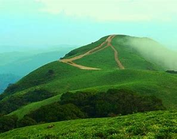
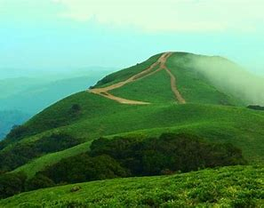
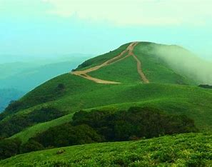

Kodagu district (also known by its former name Coorg) is an administrative district in the Karnataka state of India. Before 1956, it was an administratively separate Coorg State, at which point it was merged into an enlarged Mysore State. It occupies an area of 4,102 square kilometres (1,584 sq mi) in the Western Ghats of southwestern Karnataka. In 2001 its population was 548,561, 13.74% of which resided in the district's urban centre, making it the least populous of the 31 districts in Karnataka. The nearest railway stations are Mysore Junction, located around 95 km (59 mi) away, Thalassery, and Kannur, the latter two located in Kerala at a distance of about 79 km (49 mi). The nearest airports are Kannur International Airport in Kerala (90 km (56 mi) from Madikeri) and Mangalore International Airport (144 km (89 mi) from Madikeri).Kodagu is located on the eastern slopes of the Western Ghats. It has a geographical area of 4,102 km2 (1,584 sq mi).The district is bordered by Dakshina Kannada district to the northwest, Hassan district to the north, Mysore district to the east, Kasaragod district of Kerala in west and Kannur district of Kerala to the southwest, and Wayanad district of Kerala to the south. It is a hilly district, the lowest elevation being 50 metres (160 ft) above sea-level near makutta. The highest peak, Tadiandamol, rises to 1,750 metres (5,740 ft), with Pushpagiri, the second highest, at 1,715 metres (5,627 ft). The main river in Kodagu is the Kaveri (Cauvery), which originates at Talakaveri, located on the eastern side of the Western Ghats, and with its tributaries, drains the greater part of Kodagu.Kodagu is known for its dense forest cover and the exotic flora and fauna found here. It has three wildlife sanctuaries; Pushpagiri Wildlife Sanctuary, Talakaveri Wildlife Sanctuary and Brahmagiri Wildlife Sanctuary, one National Park; the Nagarahole National Park and the only private sanctuary of India; the SAI Sanctuary. Kodagu is home for species endemic to the Western Ghats. It has large Tiger and Elephant population as well. As per the elephant census of 2023, Kodagu with 1,013 elephants, had nearly one-sixth of total elephant population in Karnataka, second only to Chamarajanagar.Economy of Kodagu is dependent on agriculture. Major crops grown here are Paddy,Coffee, Rubber, Pepper, Cardamom, Coorg Oranges and Honey production. Tea, Ginger and Cocoa are also grown in smaller quantities.Kodagu is the largest Coffee and Pepper producing district in India. Out of the 70% of Indian coffee grown in Karnataka, nearly 33% is contributed by Kodagu district alone.Also Kodagu produces nearly a quarter of India's Black Pepper.The Kodavas were the earliest inhabitants and agriculturists in Kodagu, having lived there for centuries. Kodavas Being a warrior community as well, they carried arms during times of war and had their own chieftains. The earliest mention about Coorg can be seen in the works those date back to Sangam period (300 BCE - 300 CE). The Ezhimala dynasty had jurisdiction over two Nadus - The coastal Poozhinadu and the hilly eastern Karkanadu.According to the works of Sangam literature, Poozhinadu consisted much of the coastal belt between Mangalore and Kozhikode.Karkanadu consisted of Wayanad-Gudalur hilly region with parts of Kodagu (Coorg). The Haleri dynasty, an offshoot of the Keladi Nayakas, ruled Kodagu between 1600 and 1834. Later the British ruled Kodagu from 1834, after the Coorg War, until India's independence in 1947. A separate state (called Coorg State) until then, in 1956 Kodagu was merged with the Mysore State (now Karnataka).In 1834, the East India Company annexed Kodagu into British India, after deposing Chikka Virarajendra of the Kodagu kingdom, as 'Coorg'.British rule led to the establishment of educational institutions, introduction of scientific coffee cultivation, better administration and improvement of the economy.
